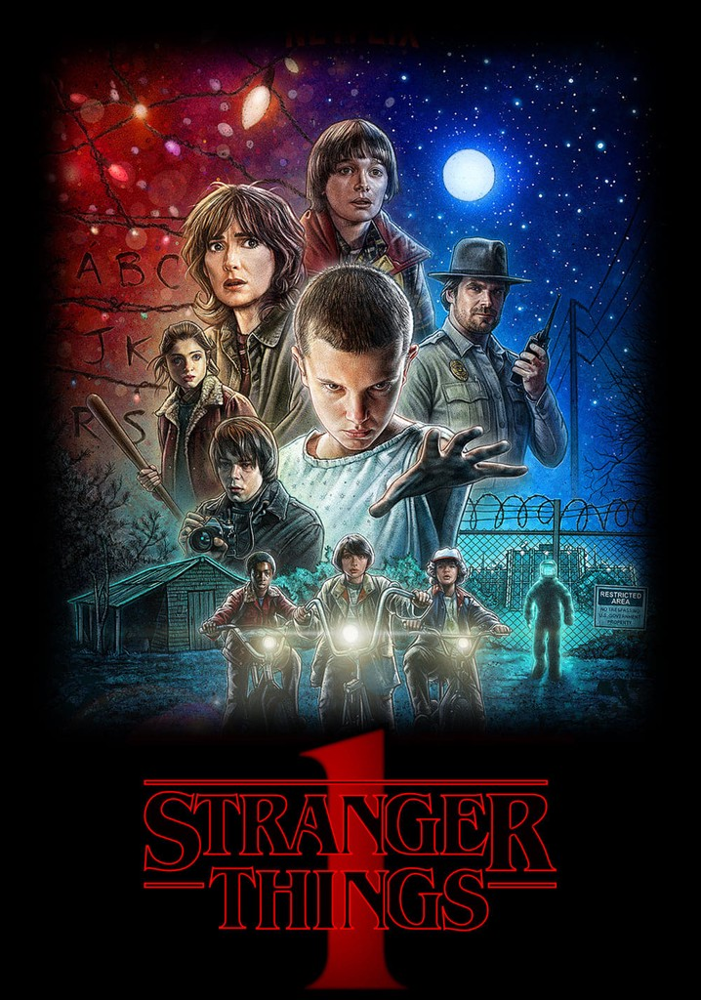
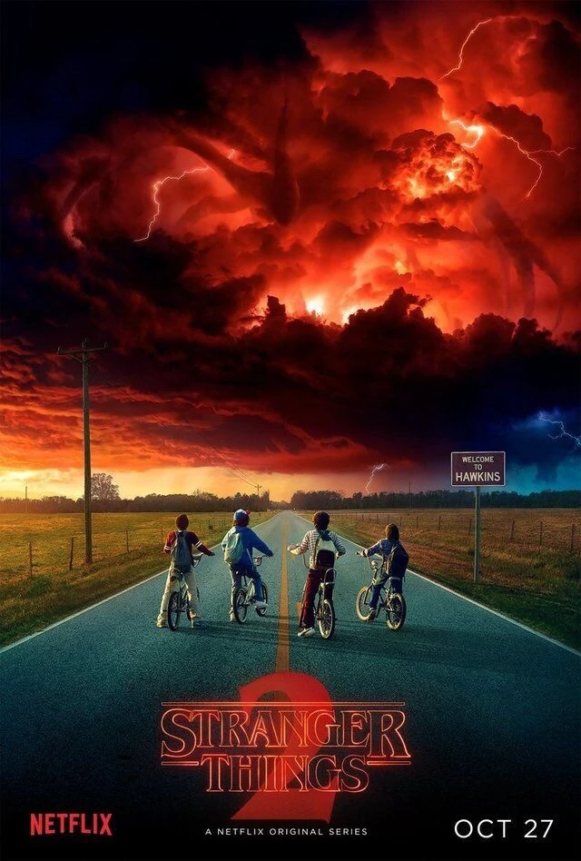
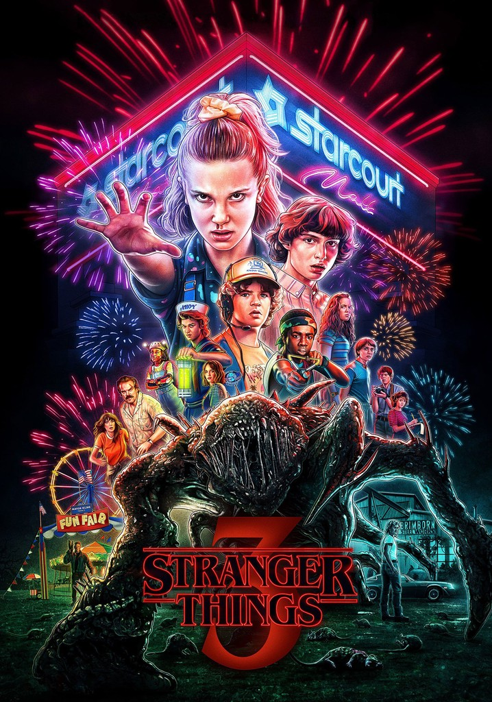

La primera temporada de Stranger Things comienza en noviembre de 1983, en el pequeño y aparentemente tranquilo pueblo de Hawkins, Indiana. La trama se dispara cuando Will Byers, un niño de doce años, desaparece misteriosamente mientras regresa a casa en bicicleta tras una partida de Dungeons & Dragons con sus amigos. Lo que comienza como una búsqueda policial convencional encabezada por el jefe de policía Jim Hopper pronto se convierte en una red de conspiraciones gubernamentales y fenómenos sobrenaturales. Mientras la madre de Will, Joyce, cae en una desesperación que raya la locura al recibir señales de su hijo a través de las luces de su casa, los amigos de Will (Mike, Dustin y Lucas) emprenden su propia investigación, encontrándose en el bosque con una niña de aspecto frágil, cabeza rapada y poderes telequinéticos que solo se identifica por el número tatuado en su brazo: Eleven.
A medida que avanza la historia, se revela que la desaparición de Will está vinculada a los experimentos secretos del Laboratorio Nacional de Hawkins, dirigido por el frío Dr. Martin Brenner. Durante sus pruebas para utilizar a Eleven como un arma de espionaje psíquico contra los soviéticos, los científicos abrieron accidentalmente una grieta en el tejido de la realidad, permitiendo la entrada de una criatura depredadora a nuestro mundo y creando un acceso a una dimensión espejo y putrefacta conocida como el Upside Down. Es en este lugar desolado donde Will lucha por sobrevivir mientras el Demogorgon acecha a otros residentes del pueblo, cobrándose víctimas como Barbara Holland, la mejor amiga de Nancy Wheeler. La narrativa se divide entonces en tres frentes que convergen: los niños que protegen a Eleven y aprenden sobre el mundo a través de la lealtad, los adolescentes Nancy y Jonathan que buscan la verdad sobre sus hermanos desaparecidos, y los adultos Hopper y Joyce, quienes descubren la magnitud de la corrupción gubernamental.
El clímax de la temporada ocurre cuando estos tres grupos finalmente unen fuerzas para rescatar a Will y detener la amenaza del laboratorio. Hopper y Joyce logran infiltrarse en la dimensión alternativa utilizando trajes de protección, encontrando a Will en un estado crítico y logrando traerlo de vuelta a la vida. Mientras tanto, en la escuela secundaria de Hawkins, los niños son rodeados por agentes del gobierno y el Demogorgon. En un acto de sacrificio final, Eleven utiliza la totalidad de sus poderes para desintegrar a la criatura, desapareciendo ella misma en el proceso y dejando a Mike y al grupo con una victoria agridulce. La temporada cierra con una aparente normalidad recuperada, pero con indicios inquietantes de que el trauma no ha terminado: Will expulsa una criatura similar a una babosa en el baño de su casa y tiene una visión fugaz del Upside Down, sugiriendo que, aunque el portal principal parece estar bajo control, la conexión con esa dimensión oscura y las secuelas de los experimentos de Brenner están lejos de desaparecer.

La segunda temporada se sitúa en octubre de 1984, un año después de los eventos originales, con el pueblo de Hawkins intentando recuperar una normalidad que resulta ser solo superficial. La trama se centra en el trauma postraumático de Will Byers, quien sufre de "episodios" recurrentes en los que su conciencia es transportada al Upside Down, revelando una amenaza mucho mayor que el Demogorgon: una entidad colosal hecha de sombras conocida como el Mind Flayer. Mientras tanto, la dinámica del grupo cambia con la llegada de Max Mayfield y su agresivo hermano Billy, y con la tensión de mantener en secreto la existencia de Eleven, quien vive oculta en una cabaña en el bosque bajo la protección de un Hopper cada vez más paternal y sobreprotector.
El conflicto escala cuando se descubre que el Laboratorio de Hawkins, ahora bajo la dirección del Dr. Owens, está tratando de contener una red de túneles orgánicos que se extienden bajo el pueblo como una infección masiva. La situación se vuelve crítica cuando Dustin cría accidentalmente a una pequeña criatura que resulta ser una etapa temprana de un "Demodog", una versión cuadrúpeda del monstruo original, lo que deriva en un brote de estas criaturas que asedian el laboratorio. Al mismo tiempo, Eleven emprende un viaje personal de autodescubrimiento que la lleva a Chicago, donde conoce a Kali, otra joven con poderes del laboratorio, lo que le permite entender el alcance de sus habilidades y decidir que su verdadero hogar y su misión están en proteger a sus amigos en Hawkins.
El desenlace converge en una operación coordinada para salvar el pueblo y la vida de Will, quien ha sido poseído por el Mind Flayer y actúa como un espía para la entidad. Mientras Joyce, Jonathan y Nancy utilizan calor extremo para exorcizar el virus de la sombra del cuerpo de Will, Steve y los niños se adentran en los túneles subterráneos para prenderles fuego y distraer a la colmena de monstruos. Esto le da el tiempo necesario a Eleven para regresar y, en una demostración de poder sin precedentes impulsada por su dolor y sus recuerdos, cerrar finalmente el portal gigante en el laboratorio. La temporada concluye con una nota de esperanza en el baile de invierno de la escuela, donde los personajes disfrutan de un breve momento de paz, aunque la imagen final del Mind Flayer acechando la versión reflejada de la escuela en el Upside Down deja claro que la entidad ahora tiene a Eleven y a sus amigos en la mira.

La tercera temporada se desarrolla durante el caluroso verano de 1985, trasladando la acción del entorno escolar al recién inaugurado Starcourt Mall, que se convierte en el nuevo centro social de Hawkins. La trama muestra a un grupo de amigos dividido por los cambios propios de la adolescencia; mientras Mike y Eleven exploran su relación sentimental ante el malestar de un Hopper sobreprotector, Dustin se une a Steve y a la recién llegada Robin Buckley para investigar una transmisión de radio sospechosa. Este grupo descubre que el centro comercial es en realidad una fachada para una base militar soviética subterránea, donde científicos rusos están utilizando una máquina de alta tecnología para intentar reabrir el portal hacia el Upside Down que Eleven había cerrado el año anterior.
A medida que el portal comienza a agrietarse, el Mind Flayer, que había quedado atrapado en nuestro mundo tras el cierre de la brecha, comienza a manifestarse de una forma física y aterradora. En lugar de poseer a una sola persona como hizo con Will, la entidad empieza a "derretir" y absorber a diversos residentes del pueblo, incluyendo inicialmente a Billy Mayfield, para construir un cuerpo masivo de carne y sangre. Este monstruo de proporciones gigantescas tiene como único objetivo localizar y destruir a Eleven, quien representa la única amenaza real para sus planes de conquista. La tensión aumenta cuando se revela que los infectados actúan como una mente colmena, transformando a Hawkins en un campo de batalla donde nadie parece estar a salvo de la asimilación.
El enfrentamiento final tiene lugar en el Starcourt Mall, donde todos los equipos convergen para detener la amenaza en dos frentes simultáneos. Mientras Eleven y el grupo de amigos luchan por sobrevivir al ataque directo del monstruo de carne, Hopper y Joyce se infiltran en la base rusa para destruir la máquina que mantiene abierto el portal. En un cierre emocional y devastador, Billy recupera su conciencia gracias a Eleven y se sacrifica para protegerla, mientras que Hopper aparentemente muere en una explosión para permitir que Joyce cierre la brecha definitivamente. La temporada termina con la disolución del grupo original: la familia Byers se muda de Hawkins llevándose a una Eleven que ha perdido sus poderes, dejando atrás un pueblo marcado por la tragedia y un futuro incierto frente a la pérdida de su principal protector.

Para navegar por otras secciones: